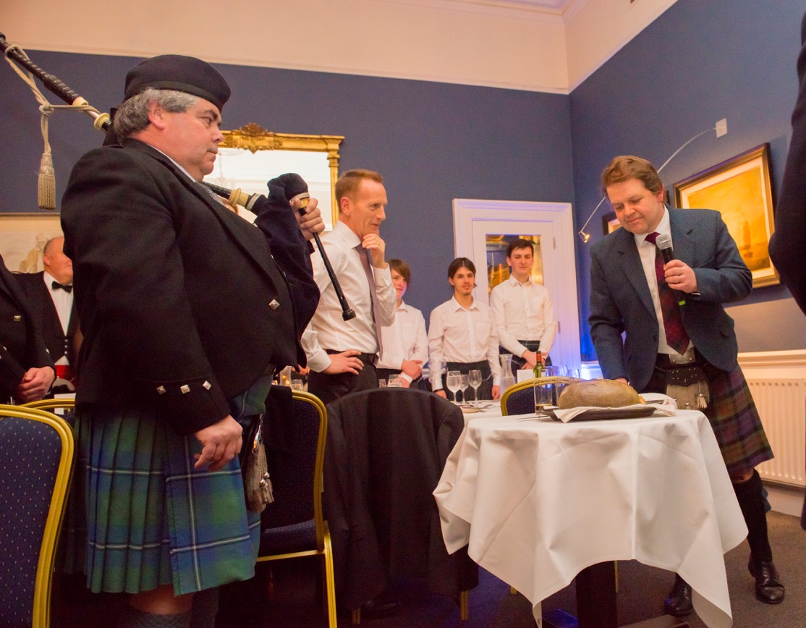
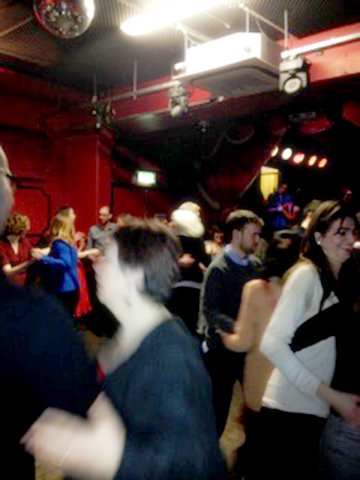
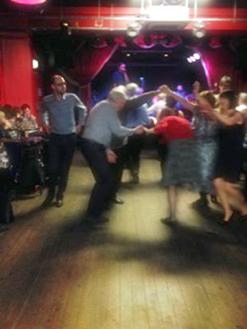

Activities & Future Events
The Bye Laws of the Society state that "the Society shall dine together on the Anniversary Day and on Burns Nicht" or the nearest convenient dates and these have become the major events of the Society's year.
A number of other social events are held throughout the year - please click the venue name for more information on the location:
Céilídh,
Wednesday 15th March 2017, 8pm
Workman's Club, 10 Wellington Quay.
With music by Traditional Arts Collective,
Entrance €8.

 
Addressing the Haggis - Burns Night 2016, and pictures from our annual St. Valentine's Céilídh